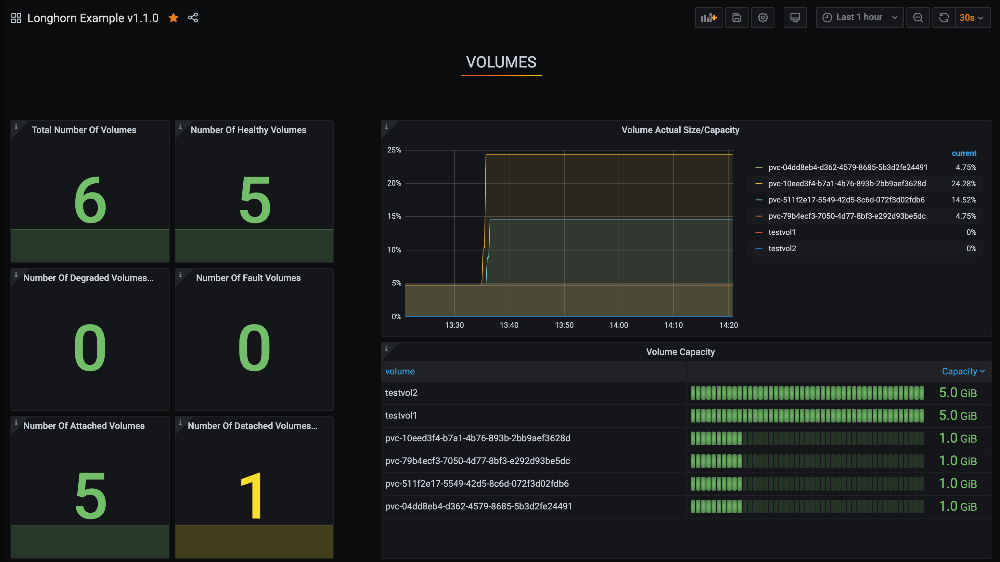

Configure Prometheus and Grafana to Monitor SUSE® Storage
Longhorn natively exposes metrics in Prometheus text format on a REST endpoint http://LONGHORN_MANAGER_IP:PORT/metrics.
You can use any collecting tools such as Prometheus, Graphite, Telegraf to scrape these metrics then visualize the collected data by tools such as Grafana.
See Longhorn Metrics for Monitoring for available metrics.
High-level Overview
The monitoring system uses Prometheus for collecting data and alerting, and Grafana for visualizing/dashboarding the collected data.
-
Prometheus server which scrapes and stores time-series data from Longhorn metrics endpoints. The Prometheus is also responsible for generating alerts based on configured rules and collected data. Prometheus servers then send alerts to an Alertmanager.
-
AlertManager then manages those alerts, including silencing, inhibition, aggregation, and sending out notifications via methods such as email, on-call notification systems, and chat platforms.
-
Grafana which queries Prometheus server for data and draws a dashboard for visualization.
The below picture describes the detailed architecture of the monitoring system.
There are 2 unmentioned components in the above picture:
-
Longhorn Backend service is a service pointing to the set of Longhorn manager pods. Longhorn’s metrics are exposed in Longhorn manager pods at the endpoint
http://LONGHORN_MANAGER_IP:PORT/metrics. -
Prometheus operator makes running Prometheus on top of Kubernetes very easy. The operator watches 3 custom resources: ServiceMonitor, Prometheus ,and AlertManager. When you create those custom resources, Prometheus Operator deploys and manages the Prometheus server, AlertManager with the user-specified configurations.
Installation
This document uses the default namespace for the monitoring system. To install on a different namespace, change the field namespace: <OTHER_NAMESPACE> in manifests.
Install Prometheus Operator
Follow instructions in Prometheus Operator - Quickstart.
NOTE: You may need to choose a release that is compatible with the Kubernetes version of the cluster.
Install Longhorn ServiceMonitor
Install Longhorn ServiceMonitor with Kubectl
Create a ServiceMonitor for Longhorn Manager.
apiVersion: monitoring.coreos.com/v1
kind: ServiceMonitor
metadata:
name: longhorn-prometheus-servicemonitor
namespace: default
labels:
name: longhorn-prometheus-servicemonitor
spec:
selector:
matchLabels:
app: longhorn-manager
namespaceSelector:
matchNames:
- longhorn-system
endpoints:
- port: managerInstall Longhorn ServiceMonitor with Helm
-
Modify the YAML file
longhorn/chart/values.yaml.metrics: serviceMonitor: # -- Setting that allows the creation of a [Prometheus Operator](https://prometheus-operator.dev/) ServiceMonitor resource for Longhorn Manager components. enabled: true -
Create a ServiceMonitor for Longhorn Manager using Helm.
helm upgrade longhorn longhorn/longhorn --namespace longhorn-system -f values.yaml
Longhorn ServiceMonitor is a Prometheus Operator custom resource. This setup allows the Prometheus server to discover all Longhorn Manager pods and their respective endpoints.
You can use the label selector app: longhorn-manager to select the longhorn-backend service, which points to the set of Longhorn Manager pods.
Install and configure Prometheus AlertManager
-
Create a highly available Alertmanager deployment with 3 instances.
apiVersion: monitoring.coreos.com/v1 kind: Alertmanager metadata: name: longhorn namespace: default spec: replicas: 3 -
The Alertmanager instances will not start unless a valid configuration is given. See Prometheus - Configuration for more explanation.
global: resolve_timeout: 5m route: group_by: [alertname] receiver: email_and_slack receivers: - name: email_and_slack email_configs: - to: <the email address to send notifications to> from: <the sender address> smarthost: <the SMTP host through which emails are sent> # SMTP authentication information. auth_username: <the username> auth_identity: <the identity> auth_password: <the password> headers: subject: 'Longhorn-Alert' text: |- {{ range .Alerts }} *Alert:* {{ .Annotations.summary }} - `{{ .Labels.severity }}` *Description:* {{ .Annotations.description }} *Details:* {{ range .Labels.SortedPairs }} • *{{ .Name }}:* `{{ .Value }}` {{ end }} {{ end }} slack_configs: - api_url: <the Slack webhook URL> channel: <the channel or user to send notifications to> text: |- {{ range .Alerts }} *Alert:* {{ .Annotations.summary }} - `{{ .Labels.severity }}` *Description:* {{ .Annotations.description }} *Details:* {{ range .Labels.SortedPairs }} • *{{ .Name }}:* `{{ .Value }}` {{ end }} {{ end }}Save the above Alertmanager config in a file called
alertmanager.yamland create a secret from it using kubectl.Alertmanager instances require the secret resource naming to follow the format
alertmanager-<ALERTMANAGER_NAME>. In the previous step, the name of the Alertmanager islonghorn, so the secret name must bealertmanager-longhorn$ kubectl create secret generic alertmanager-longhorn --from-file=alertmanager.yaml -n default
-
To be able to view the web UI of the Alertmanager, expose it through a Service. A simple way to do this is to use a Service of type NodePort.
apiVersion: v1 kind: Service metadata: name: alertmanager-longhorn namespace: default spec: type: NodePort ports: - name: web nodePort: 30903 port: 9093 protocol: TCP targetPort: web selector: alertmanager: longhornAfter creating the above service, you can access the web UI of Alertmanager via a Node’s IP and the port 30903.
Use the above
NodePortservice for quick verification only because it doesn’t communicate over the TLS connection. You may want to change the service type toClusterIPand set up an Ingress-controller to expose the web UI of Alertmanager over a TLS connection.
Install and configure Prometheus server
-
Create PrometheusRule custom resource to define alert conditions. See more examples about Longhorn alert rules at Longhorn Alert Rule Examples.
apiVersion: monitoring.coreos.com/v1 kind: PrometheusRule metadata: labels: prometheus: longhorn role: alert-rules name: prometheus-longhorn-rules namespace: default spec: groups: - name: longhorn.rules rules: - alert: LonghornVolumeUsageCritical annotations: description: Longhorn volume {{$labels.volume}} on {{$labels.node}} is at {{$value}}% used for more than 5 minutes. summary: Longhorn volume capacity is over 90% used. expr: 100 * (longhorn_volume_usage_bytes / longhorn_volume_capacity_bytes) > 90 for: 5m labels: issue: Longhorn volume {{$labels.volume}} usage on {{$labels.node}} is critical. severity: criticalSee Prometheus - Alerting rules for more information.
-
If RBAC authorization is activated, Create a ClusterRole and ClusterRoleBinding for the Prometheus Pods.
apiVersion: v1 kind: ServiceAccount metadata: name: prometheus namespace: defaultapiVersion: rbac.authorization.k8s.io/v1 kind: ClusterRole metadata: name: prometheus namespace: default rules: - apiGroups: [""] resources: - nodes - services - endpoints - pods verbs: ["get", "list", "watch"] - apiGroups: [""] resources: - configmaps verbs: ["get"] - nonResourceURLs: ["/metrics"] verbs: ["get"]apiVersion: rbac.authorization.k8s.io/v1 kind: ClusterRoleBinding metadata: name: prometheus roleRef: apiGroup: rbac.authorization.k8s.io kind: ClusterRole name: prometheus subjects: - kind: ServiceAccount name: prometheus namespace: default -
Create a Prometheus custom resource. Notice that we select the Longhorn service monitor and Longhorn rules in the spec.
apiVersion: monitoring.coreos.com/v1 kind: Prometheus metadata: name: longhorn namespace: default spec: replicas: 2 serviceAccountName: prometheus alerting: alertmanagers: - namespace: default name: alertmanager-longhorn port: web serviceMonitorSelector: matchLabels: name: longhorn-prometheus-servicemonitor ruleSelector: matchLabels: prometheus: longhorn role: alert-rules -
To be able to view the web UI of the Prometheus server, expose it through a Service. A simple way to do this is to use a Service of type NodePort.
apiVersion: v1 kind: Service metadata: name: prometheus-longhorn namespace: default spec: type: NodePort ports: - name: web nodePort: 30904 port: 9090 protocol: TCP targetPort: web selector: prometheus: longhornAfter creating the above service, you can access the web UI of the Prometheus server via a Node’s IP and the port 30904.
At this point, you should be able to see all Longhorn manager targets as well as Longhorn rules in the targets and rules section of the Prometheus server UI.
Use the above NodePort service for quick verification only because it doesn’t communicate over the TLS connection. You may want to change the service type to
ClusterIPand set up an Ingress controller to expose the web UI of the Prometheus server over a TLS connection.
Setup Grafana
-
Create Grafana datasource ConfigMap.
apiVersion: v1 kind: ConfigMap metadata: name: grafana-datasources namespace: default data: prometheus.yaml: |- { "apiVersion": 1, "datasources": [ { "access":"proxy", "editable": true, "name": "prometheus-longhorn", "orgId": 1, "type": "prometheus", "url": "http://prometheus-longhorn.default.svc:9090", "version": 1 } ] }NOTE: change field
urlif you are installing the monitoring stack in a different namespace.http://prometheus-longhorn.<NAMESPACE>.svc:9090" -
Create Grafana Deployment.
apiVersion: apps/v1 kind: Deployment metadata: name: grafana namespace: default labels: app: grafana spec: replicas: 1 selector: matchLabels: app: grafana template: metadata: name: grafana labels: app: grafana spec: containers: - name: grafana image: grafana/grafana:7.1.5 ports: - name: grafana containerPort: 3000 resources: limits: memory: "500Mi" cpu: "300m" requests: memory: "500Mi" cpu: "200m" volumeMounts: - mountPath: /var/lib/grafana name: grafana-storage - mountPath: /etc/grafana/provisioning/datasources name: grafana-datasources readOnly: false volumes: - name: grafana-storage emptyDir: {} - name: grafana-datasources configMap: defaultMode: 420 name: grafana-datasources -
Create Grafana Service.
apiVersion: v1 kind: Service metadata: name: grafana namespace: default spec: selector: app: grafana type: ClusterIP ports: - port: 3000 targetPort: 3000 -
Expose Grafana on NodePort
32000.kubectl -n default patch svc grafana --type='json' -p '[{"op":"replace","path":"/spec/type","value":"NodePort"},{"op":"replace","path":"/spec/ports/0/nodePort","value":32000}]'Use the above NodePort service for quick verification only because it doesn’t communicate over the TLS connection. You may want to change the service type to ClusterIP and set up an Ingress controller to expose Grafana over a TLS connection.
-
Access the Grafana dashboard using any node IP on port
32000.# Default Credential User: admin Pass: admin
-
Setup Longhorn dashboard.
Once inside Grafana, import the prebuilt Longhorn example dashboard.
See Grafana Lab - Export and import for instructions on how to import a Grafana dashboard.
You should see the following dashboard at successful setup: 